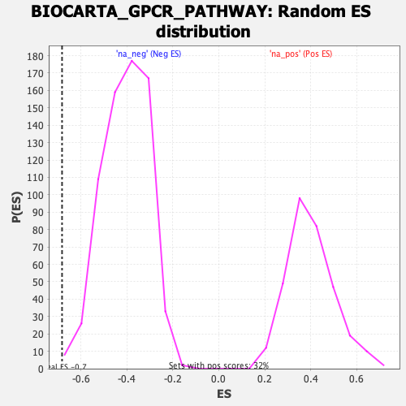

| | | Dataset | DE_genes |
| Phenotype | NoPhenotypeAvailable |
| Upregulated in class | na_neg |
| GeneSet | BIOCARTA_GPCR_PATHWAY |
| Enrichment Score (ES) | -0.6817459 |
| Normalized Enrichment Score (NES) | -1.6873424 |
| Nominal p-value | 0.0029368575 |
| FDR q-value | 0.09162542 |
| FWER p-Value | 0.098 |
Table: GSEA Results Summary
 Fig 1: Enrichment plot: BIOCARTA_GPCR_PATHWAY
Fig 1: Enrichment plot: BIOCARTA_GPCR_PATHWAY
Profile of the Running ES Score & Positions of GeneSet Members on the Rank Ordered List
| PROBE | GENE SYMBOL | GENE_TITLE | RANK IN GENE LIST | RANK METRIC SCORE | RUNNING ES | CORE ENRICHMENT | | 1 | GNAQ | | | 995 | 0.865 | -0.0403 | No |
| 2 | PRKACB | | | 1671 | 0.445 | -0.0716 | No |
| 3 | CALM1 | | | 3125 | 0.128 | -0.1621 | No |
| 4 | CREB1 | | | 3629 | 0.091 | -0.1921 | No |
| 5 | CALM2 | | | 4537 | 0.039 | -0.2498 | No |
| 6 | CALM3 | | | 4992 | 0.016 | -0.2787 | No |
| 7 | ADCY1 | | | 5137 | 0.009 | -0.2878 | No |
| 8 | PRKAR2B | | | 5206 | 0.006 | -0.2920 | No |
| 9 | PRKAR1A | | | 6121 | -0.048 | -0.3498 | No |
| 10 | PRKCB | | | 6650 | -0.085 | -0.3817 | No |
| 11 | PRKAR2A | | | 8366 | -0.236 | -0.4861 | No |
| 12 | MAP2K1 | | | 9255 | -0.342 | -0.5341 | No |
| 13 | HRAS | | | 9295 | -0.347 | -0.5269 | No |
| 14 | RPS6KA3 | | | 9580 | -0.385 | -0.5346 | No |
| 15 | PPP3CA | | | 10165 | -0.473 | -0.5592 | No |
| 16 | PPP3CB | | | 10940 | -0.589 | -0.5929 | No |
| 17 | PRKCA | | | 11361 | -0.669 | -0.6014 | No |
| 18 | PPP3CC | | | 11937 | -0.792 | -0.6165 | No |
| 19 | MAPK3 | | | 12945 | -1.060 | -0.6522 | Yes |
| 20 | ELK1 | | | 13022 | -1.083 | -0.6269 | Yes |
| 21 | NFATC1 | | | 13093 | -1.104 | -0.6006 | Yes |
| 22 | PRKAR1B | | | 13402 | -1.215 | -0.5866 | Yes |
| 23 | NFATC3 | | | 14538 | -1.819 | -0.6094 | Yes |
| 24 | PLCG1 | | | 14799 | -2.062 | -0.5686 | Yes |
| 25 | NFATC2 | | | 15009 | -2.319 | -0.5174 | Yes |
| 26 | NFATC4 | | | 15244 | -2.762 | -0.4555 | Yes |
| 27 | RAF1 | | | 15370 | -3.364 | -0.3697 | Yes |
| 28 | JUN | | | 15456 | -4.705 | -0.2439 | Yes |
| 29 | FOS | | | 15471 | -8.771 | -0.0000 | Yes |
Table: GSEA details [plain text format]

Fig 2: BIOCARTA_GPCR_PATHWAY: Random ES distribution
Gene set null distribution of ES for BIOCARTA_GPCR_PATHWAY